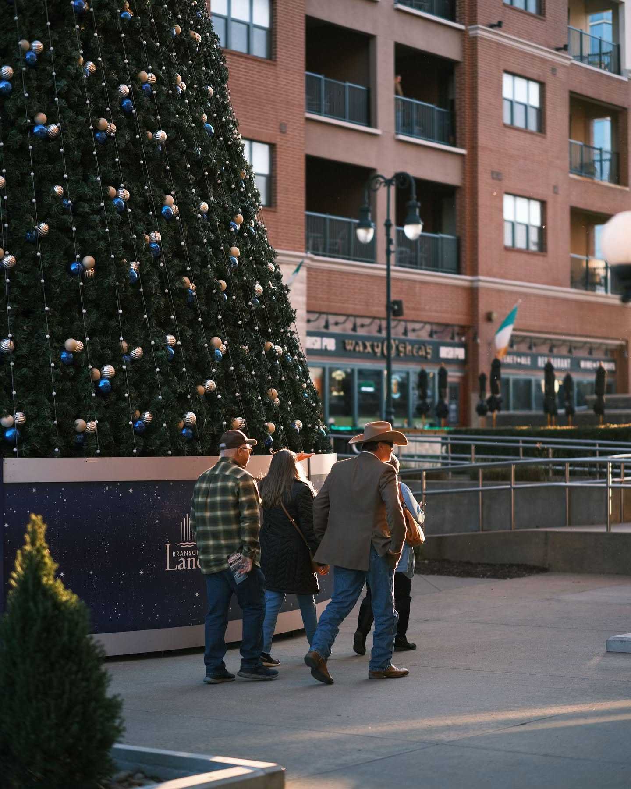

I keep landing on the parts of a project nobody's mapped out yet, and lately that has meant AI products, where there isn't much convention to borrow.
At Codefi it's AI-native products, new enough that people don't fully trust them yet. At ConGenius it was an estimating tool that fought how estimators actually think until we rebuilt it. Same question every time: people already have a way of doing this, so why would they switch?
My first question is why people already do it the old way, and whether this needs to be an interface at all. There's only so much new UI a person can learn, so the version they never notice usually beats the clever one.
How much I dig in before deciding depends on how fast the ground is moving. Construction estimating hasn't changed in decades and rewards research. AI tooling moves under you, and there the honest answer is to ship something and watch.
How things actually change
Three separate times, the way I got a decision changed was the same: build credibility somewhere nobody was arguing, then spend it on the thing they were.
Reading construction books until I could argue about estimating. Fixing marketing layouts before touching a brand palette I'd been told was fixed. Shipping the version I'd argued against, then rebuilding it on what the launch showed.
Where and how I spend my time
Product design
AI-native surfaces at Codefi, 0→1 estimating workflows at ConGenius. The undefined parts of the problem land on me either way. On AI products I argue for automating what someone can already do by hand, so the decision still belongs to them.
PrimaryGrowth systems
Two GTM theses I wrote, both adopted. Four live events, an ad account beating its target CPL. I check whether what ships actually works, most places don't bother.
Adjacent, not a pivotSystems & tooling
A token system before a line of code existed, an MCP-based content engine because off-the-shelf output looked AI-generated. Same instinct both times: notice the constraint, build the fix. More on it →
Built when it was missingSomething I'm proud of
A speculative AR concept from my Purdue capstone. Glasses that render through a car's body, so a driver's blind-spot glance gets an answer. It's the earliest version of an idea I still design around: work with the habit someone already has. A student project, and where the instinct started. More on it →
Marketing and creative work
Client work I run end to end: strategy, site, tracking, creative and campaign management. I'm not looking for a marketing job. This is the evidence I can own the growth side of a design role.
Outside the work
Photography, and writing when I have the discipline for it

Landscapes and street, mostly. No deadline on either one, just paying attention to what's actually in front of you and deciding what's worth keeping in the frame.
That shows up in the work too. Given the choice, I'll pick the version that feels alive over the one that feels safe. That's how a loading screen turned into an onboarding walkthrough, and how a hackathon ended up with a brand that looks nothing like the rest of B2B software.